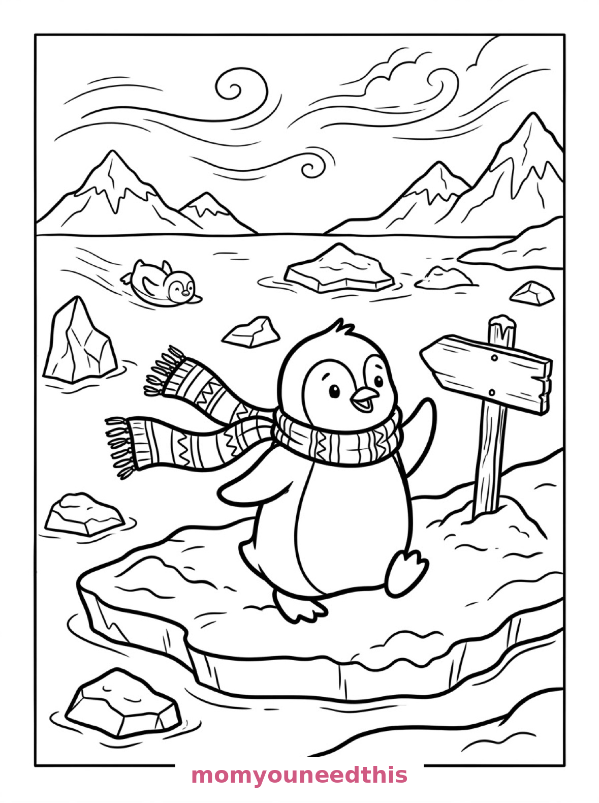
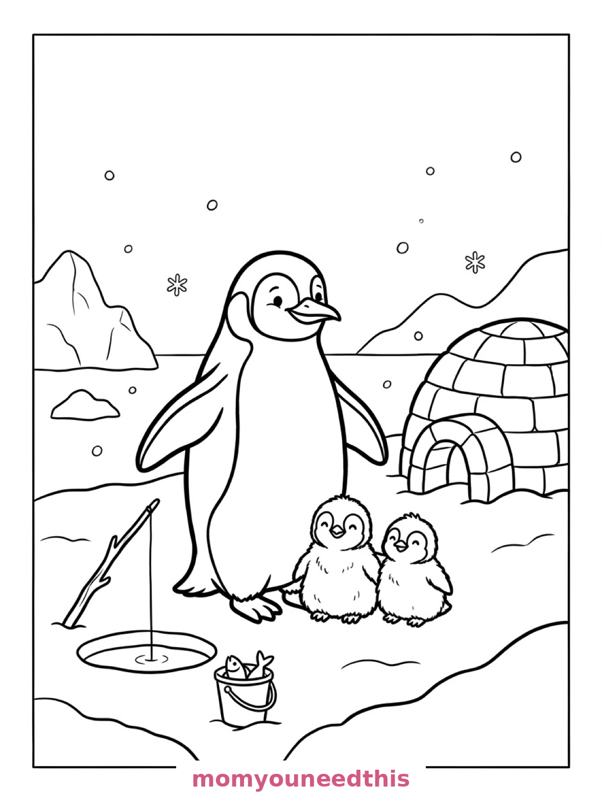
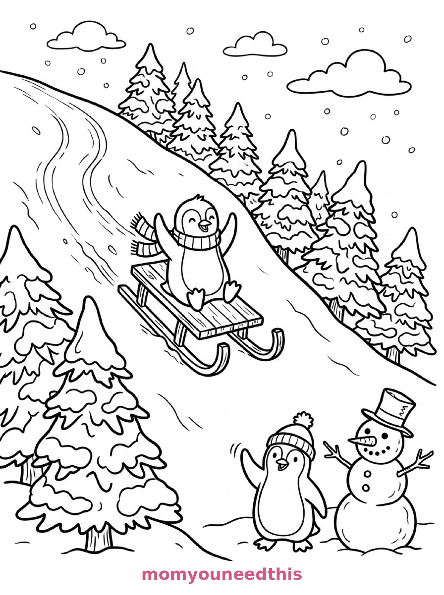

Free Penguin Coloring Pages Waddle, Family & Sledding Printables
These free penguin coloring pages waddle through three Antarctic days — a scarf-wearing penguin crossing the ice, a penguin family by its igloo, and a penguin sledding down a hill. Download the set below, print at home on letter-size paper, and let the coloring fun begin. No signup needed.
Last updated: October 23, 2026
Quick Answer
Yes — this page has three free printable penguin coloring pages: a round-bellied penguin waddling across an ice floe with its scarf streaming, a penguin parent with two fluffy chicks by an igloo, and a penguin tobogganing down a snowy hill on a wooden sled. Bold outlines and big spaces, made for little hands. Download, print on letter-size paper, and hand over the crayons — no signup, no cost.
At a Glance
- Ages: 3–8
- Pages: 3 free printables
- Format: Print at home, letter size
- Cost: Free, no signup
- Supplies: Crayons or markers
- Time: 10–20 minutes
🐧 Penguin Waddling on the Ice Coloring Page

🎨 Download Your Free Waddling Penguin Coloring Page
A round-bellied penguin waddles across a windswept ice floe with one flipper raised, its long knitted scarf streaming behind, past jagged ice chunks, a belly-sliding friend, distant mountains and a signpost in a snowdrift — bold outlines, big spaces, zero signup.
⬇️ Download Free Waddling Penguin Page 🖨️ Print Waddling Penguin Page🎁 Free printable for preschoolers & kids
🐣 Penguin Family by the Igloo Coloring Page

🎨 Download Your Free Penguin Family Coloring Page
A penguin parent stands proudly on a snowy shore with two fluffy chicks tucked against its feet, an igloo of rounded ice blocks behind, a fishing hole with a line dropped in and a bucket of fish beside it — bold outlines, big spaces, zero signup.
⬇️ Download Free Penguin Family Page 🖨️ Print Penguin Family Page🎁 Free printable for preschoolers & kids
🛷 Penguin Sledding Down the Hill Coloring Page

🎨 Download Your Free Sledding Penguin Coloring Page
A penguin toboggans down a steep snowy hill on a wooden sled with its flippers thrown up, past snow-heavy pine trees, to a penguin friend and a top-hat snowman waiting at the bottom — bold outlines, big spaces, zero signup.
⬇️ Download Free Sledding Penguin Page 🖨️ Print Sledding Penguin Page🎁 Free printable for preschoolers & kids
More Coloring Pages
Tap any picture to open its theme page and download the free printable.


🐧 How To Use This Page
- Browse the three designs and pick the penguin scene your child will love most.
- Tap download or print under that design — the file opens full-size, ready for letter-size paper.
- Print a couple of copies of the sledding hill — nobody colors that ride just once.
- Color together with crayons or markers and waddle between pages.
❄️ Why Kids Love Penguin Coloring Pages
Penguins are the best-dressed birds on Earth, and kids know it. These pages show penguins doing what penguins do best — waddling, huddling with their chicks, and throwing themselves down hills on their bellies and sleds. Every scene is pure penguin personality.
Penguin pages also make a gentle first lesson in two-tone coloring. A penguin is black and white by design, so the coloring job is really about everything else: the scarf, the sky, the igloo, the sunset that isn't there. Kids learn to build a picture around a simple, bold shape — and it always works. Add a long scarf, a wooden sled or a whole igloo around that simple shape and the page quietly teaches composition — one clear star, a foreground, a background — without ever using the word.
🐧 Meet the Three Penguin Scenes on This Page
The waddler on the floe. A round-bellied penguin waddles across a windswept ice floe with one flipper raised, wearing a long knitted scarf that streams behind it, surrounded by jagged ice chunks, a second smaller penguin sliding on its belly in the background, distant snow-covered mountains and a wooden signpost half-buried in a snowdrift. The scarf is the star — long, patterned and made for stripes.
The family by the igloo. A penguin parent stands proudly on a snowy shore with two fluffy chicks tucked against its feet, an igloo built of rounded ice blocks behind them, a fishing hole cut in the ice with a fishing line dropped in, a bucket of fish beside it, and gentle snowfall drifting over rounded icebergs. It is the sweetest page in the set — three penguins, one home.
The sledding run. A penguin toboggans down a steep snowy hill on a wooden sled with its flippers thrown up, pine trees heavy with snow lining the slope, a penguin friend waiting at the bottom beside a snowman wearing a top hat and carrot nose, with curling sled tracks winding down the hillside. It is the most exciting page in the set — color it fast.
✏️ Penguin Coloring Tips
- Keep the classic tuxedo — or don't. Black back and white belly is the real penguin look, but a purple penguin with a green scarf loses nothing.
- Stripe the scarf. The waddling penguin's long scarf streams across half the page — alternating colors make the whole design move.
- Shade the ice pale blue. Light blue floes and icebergs against a white page read as “frozen” instantly, and the penguins pop.
- Color the chicks soft gray. Real penguin chicks are fluffy gray — a gentle gray makes the parent-chick contrast lovely.
🐧 Coloring Pages for Different Ages
For ages 3 to 4, start with the waddling penguin. One big round bird, a long scarf and chunky ice are all a little colorer needs.
For ages 5 to 6, the igloo family is the sweet spot. Three penguins in different sizes, an igloo to pattern, and a bucket of fish to count.
For ages 7 to 8, hand over the sledding hill. The slope, the sled tracks, the snowy pines and the waiting snowman reward careful coloring — and the scene tells a whole story.
🛷 More Penguin Fun After Coloring
Waddle races: put the finished pages at the end of the hallway as the finish line, and race penguin-style — feet together, arms at sides, waddling only. Slowest-looking race, loudest laughter.
For the full snowy set, the winter coloring pages bring a snowman, a sledding hill and a skating pond — and the snowman coloring pages include the postman and the pond pair, snowman-sled crossover included.
🔗 More Free Printables You’ll Love
- Free Winter Coloring Pages A snowman, a sledding hill and an ice-skating pond to color.
- Free Snowman Coloring Pages Village, pond and postman snowmen to print and color.
- Free Snowflake Coloring Pages Three giant snowflakes to pattern, decorate and color.
- All Free Coloring Pages Browse every free coloring page on the site, organized by theme.
❓ Penguin Coloring Pages FAQ
Are these penguin coloring pages really free?
Yes — all three designs on this page are free original printables from MomYouNeedThis. Download them, print them at home, and color — no signup and no cost.
What ages are these coloring pages best for?
Kids ages 3 to 8 get the most from this set. The waddling penguin is the gentlest start for younger children, while the igloo family and sledding scenes have the detail older kids enjoy.
How do I print a coloring page?
Tap the download button under the design you want, then print the file on regular letter-size paper. The print button opens the full-size page in a new tab if you prefer to print from there.
Is the snowman on the sledding page the same as the snowman coloring pages?
No — the snowman waiting at the bottom of the sledding hill is a guest in the penguins' scene. The snowman coloring pages have three scenes of their own: a village square, a frozen pond and a snowman postman.
Can I make a penguin coloring book from these pages?
Yes — print all three designs, stack them in order, and staple along the left edge. Add a cover sheet with your child's name for a finished homemade penguin coloring book.